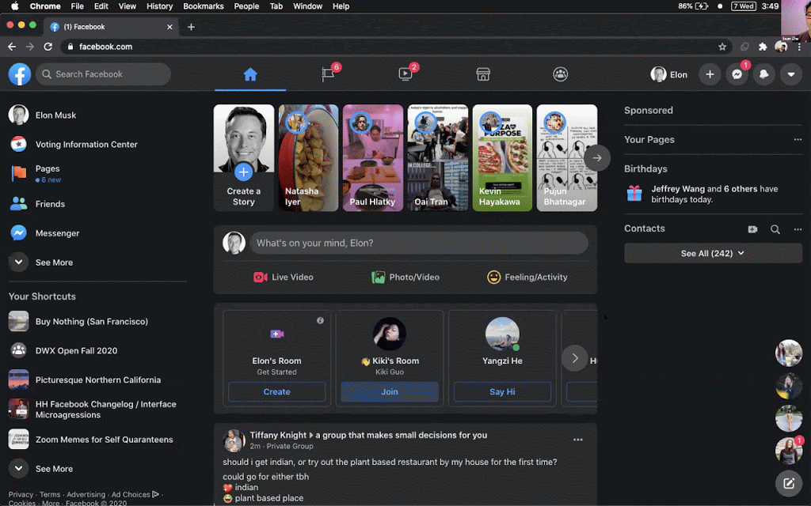
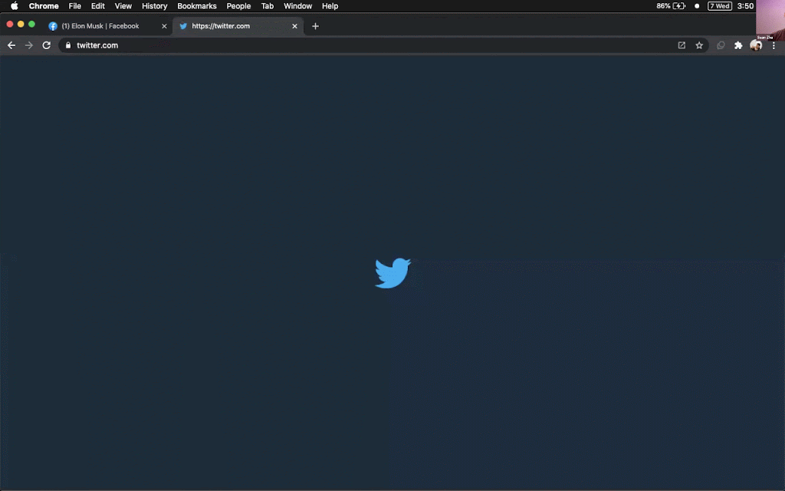
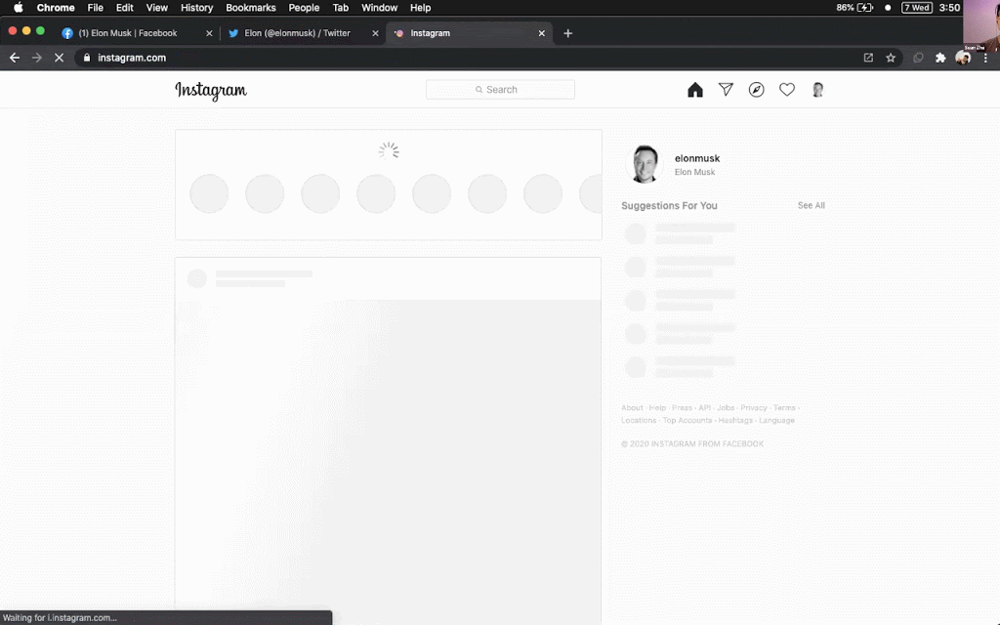

The assignment for this week:
> Assignment: Create your own, 2020 interpretation of one of the
performances discussed in this lecture.
Websites that support user accounts typically display the name or profile
picture of the current user in the corner, as a security measure, and
perhaps also to reaffirm to the user that their experience is tailored
just for them. Social media apps take this a step further by reflecting
the user's identity in a few more places, in subtle ways.
For this project, I swapped out the online identity that was reflected
back at me with that of someone else (for this demo, Elon Musk). I made
this work across a variety of social media sites. Here are some highlights
from the demo:



[View Entire Demo (8
minutes)](https://photos.app.goo.gl/8TqT84JCkcRmz36D8)
This experience is made possible with a Chrome extension that injects a
content script into these social media sites as the user visits them. The
content script does a few structured find-and-replace operations across
the entire DOM both at page load and when page content dynamically changes
(via a `MutationObserver`), replacing both my name and profile picture
anytime they appear.
The code is not currently public, but I will make it public when I can.
Realizations:
- Having my name and profile picture displayed everywhere is kind of like
having a little digital mirror everywhere I digitally go.
- Seeing a different name reflected back made me think harder about who I
was.
- It felt wrong to seeing Elon's name and face in the corner -- it felt
like I had hacked into his account. (At first, I had a constant urge to
log out of that account that wasn't mine.) But there was nothing unethical
at all about what I was doing.
- Some social media sites have a lot of restrictions around what names and
profile pictures you're allowed to use on the platform. There are some
good reasons for this, but most of these reasons don't apply to how users
view their own identities on the platform.
Feedback:
- _You're still actually posting as you, right? Even though it looks like
you're posting as someone else?_ Yes, this only changes how the webpage
appears to the user -- I'm not hacking into anyone's account! Note that
the fact that I can't change how other people see my identity on the
platform is not a bug, it's just not the point of this project. This
project is about shaping how users perceive themselves, which I think is
just as important.
- _Did you try posting as Elon Musk? How would that feel like?_ I hadn't
yet. But that was a good idea, so then I did, live. I didn't feel much
from the experience, but in retrospect, I noticed that I wrote a post that
I thought Elon Musk would write, rather than something I would actually
normally write.
- _You should try using it for a while, possibly randomizing the
identities, see how it makes you feel over time._ Hmmm.